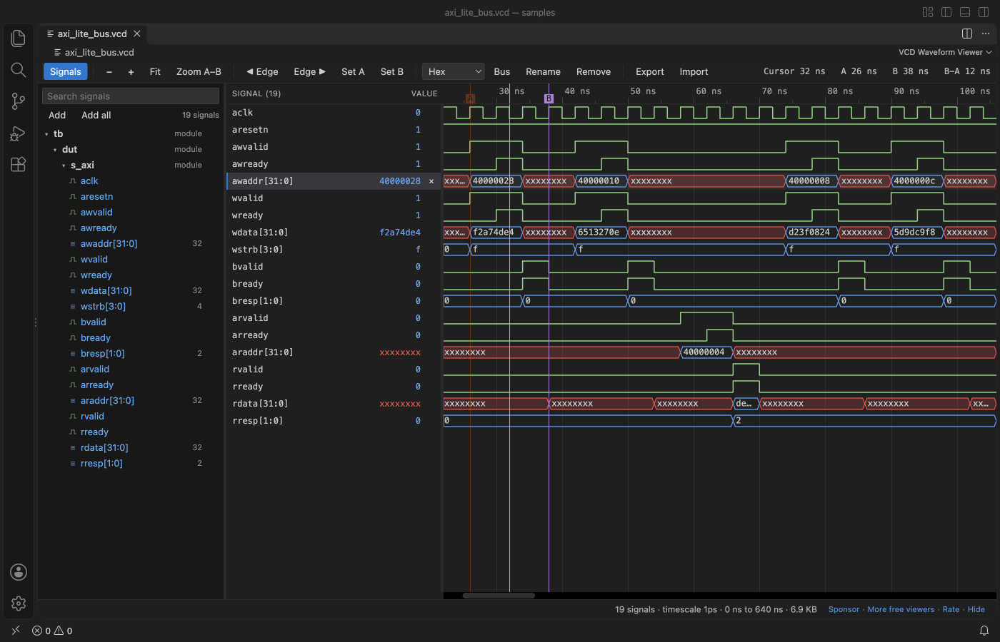

Open files in VS Code and Cursor / Binary, network and hardware
View VCD waveforms in VS Code
Install the free VCD Viewer & Waveform Viewer by Zovo and click the .vcd file your testbench wrote. The waves open in a VS Code tab with a signal tree, a value column at the cursor, markers A and B with the time between them, buses and hex, binary, signed or ASCII radix. You can show as many signals as you like, and a 1 GB file shows its first waves in seconds.
Free, MIT license. Extension ID zovo.zovo-vcd-waveform-viewer, version 0.1.0. Needs VS Code 1.90.0 or newer.

Steps in VS Code
- Install VCD Viewer from the Marketplace, or press Ctrl+P (Cmd+P on macOS) and run
ext install zovo.zovo-vcd-waveform-viewer. - In your testbench, dump a VCD:
$dumpfile("wave.vcd"); $dumpvars(0, tb);in Verilog,--vcd=wave.vcdfor GHDL or--tracefor Verilator. - Click the
.vcdfile. The first 64 signals show at once. If another viewer opens it, right-click and pick "Open in VCD Waveform Viewer". - Double-click a signal in the tree to add it, or press + next to a scope to add all of its signals.
- Ctrl or Cmd + wheel zooms at the mouse. Press A and B to place markers, and the arrow keys to jump between changes.
Steps in Cursor, Windsurf or VSCodium
- Open the Extensions view with Ctrl+Shift+X (Cmd+Shift+X on macOS).
- Search for
zovo.zovo-vcd-waveform-viewerand click Install. Cursor, Windsurf and VSCodium install from Open VSX, where it is published aszovo/zovo-vcd-waveform-viewer. - If your editor has no gallery, download the .vsix from the Open VSX page and run "Extensions: Install from VSIX...".
- Then use it the same way as in VS Code.
What VCD Viewer handles
- VCD from Icarus Verilog, Verilator, Vivado, ModelSim and GHDL, including x, z and VHDL values such as U, W, L and H.
- No signal limit. A 1.07 GB file with 20,000 signals showed its first waves after 4.3 s in a real VS Code.
- Your signal list, radixes, names, zoom and markers are kept per file and come back when the simulator writes the file again.
- Damaged files open with a note: a cut-off file, time going backwards, or a signal declared twice.
What it does not do
- VCD only. FST, GHW and LXT files are not read yet.
- Real values are drawn as values in a bus shape, not as an analog curve.
- GTKWave
.gtkwsave files are not read. Use Export and Import for signal lists.
In JetBrains IDEs (IntelliJ IDEA, PyCharm, WebStorm, CLion and others)
- SystemVerilog Studio. Zovo has no JetBrains plugin for VCD files, and we found no VCD waveform viewer on the JetBrains Marketplace on 9 November 2026. SystemVerilog Studio (13,047 downloads) is a SystemVerilog and Verilog editor, not a waveform viewer.
- GTKWave. Open the VCD in GTKWave or Surfer next to the IDE.
Other options
- VaporView (
lramseyer.vaporview, 24,959 installs, on Open VSX). Its own description: "Waveform Viewer for VS code - Supports VCD, FST, and GHW formats". Use it if your simulator writes FST or GHW. - WaveTrace (
wavetrace.wavetrace, 98,552 installs, not on Open VSX). Its own description: "Interactive VCD waveform viewer for FPGA/RTL developers". Not on Open VSX. - GTKWave. The long-standing free desktop waveform viewer. It reads VCD, FST and LXT and has its own save files.
- Surfer. A free, open source waveform viewer that runs on the desktop and in a browser.
Install counts and Open VSX status were checked on 9 November 2026. Descriptions in quotes are the extensions' own.
Questions
Is there a limit on the number of signals?
No. Add one signal, a whole scope or all signals in the file. Rows are drawn only where you look.
Does it change my VCD file?
No. The file is opened read-only. The signal list is kept in VS Code storage, or in a .signals.json file if you export it.
Can it open FST files from Verilator?
Not yet. Run Verilator with --trace to get a VCD, or use VaporView for FST.
More about VCD Viewer
Read the VCD Viewer page for every feature and setting, or the source code on GitHub.
Related guides
- Use a hex editor in VS Code
- Open a binary file in VS Code
- Open a PCAP file in VS Code
- Analyze a linker map file in VS Code
Support this work
If this extension saves you time, you can support the work on GitHub Sponsors. Monthly tiers start at $5, and one-time tiers start at $15. Sponsorship is optional, and the tool works the same without it.
Need your format supported?
Open a format request with a sample file, and I reply there whether it can be done. For USD 299 once, through this GitHub Sponsors tier, I add your file format or a missing feature to this extension, with tests, within 7 days.